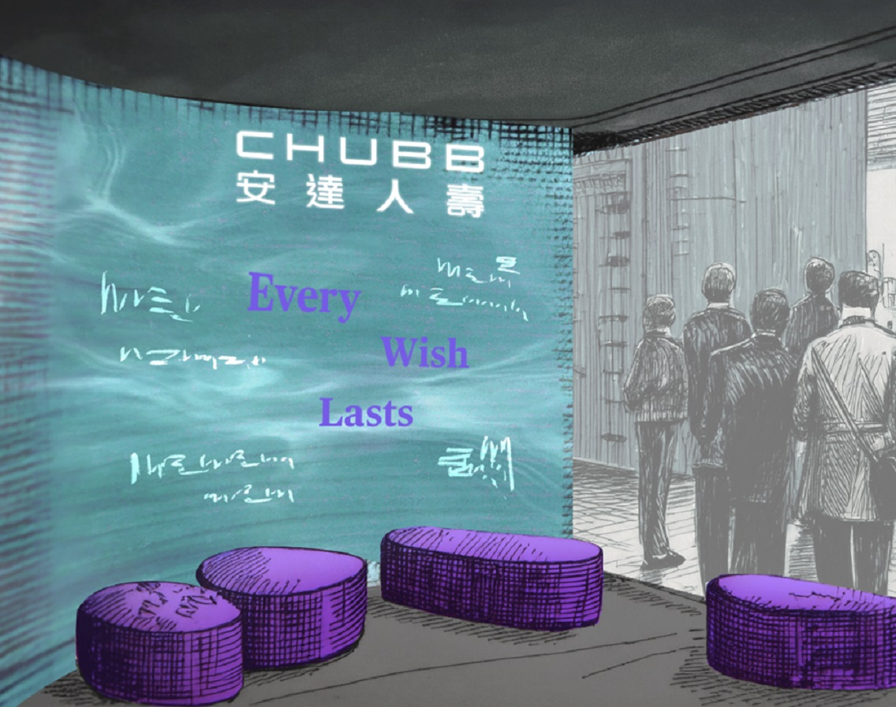

Lightbox Gallery
LIGHTBOX Gallery is a collaborative initiative by PROJCT and EJAR that transforms Hong Kong’s public spaces into a living gallery, where creativity can emerge and thrive when it is nurtured carefully. By utilising places not traditionally seen as artistic venues, the initiative uncovers the creative potential embedded within everyday urban spaces and cultivates environments where creativity can take root and grow.
The gallery came to life through the inaugural collaboration of four talented artists—Au Kin Wai Johnny, Chan Man Yi, Yeung Shu Nga Emma, and Yuen An Tung Ariel. Since then, this project has evolved into a dynamic exhibition platform that celebrates cross disciplinary collaboration and international exchange.
By turning the city itself into a canvas, streets become more than routes of movement; they evolve into spaces of interaction, reflection, and social engagement. Unlike traditional galleries, LIGHTBOX Gallery also features a month-long auction, inviting participation from local audiences and art enthusiasts around the world. This hybrid experience not only bridges Hong Kong’s vibrant urban culture with global artistic networks, but creates an environment where artistic expression can thrive, regardless of location, fostering dialogue that transcends geography.
Beyond exhibition and exchange, LIGHTBOX Gallery sees Hong Kong as a backdrop reflecting a hub for cultural exchange where Eastern and Western perspectives intersect in a global city. By focusing on the potential of creativity within hidden spaces, the gallery introduces subtle yet impactful shifts within the urban environment, encouraging attentiveness of one’s surroundings. Each installation invites viewers to observe the city’s everyday transitions and appreciate the small moments of change that shape urban life.
Chubb Life 'Last wishes'


Every Wish Lasts: Having the toughest conversation
In a society where death is a profound taboo, our challenge was to help position Chubb Life not just as an insurer, but as a compassionate leader in life’s most important conversations. Further research revealed a critical insight: 71% of Hong Kong residents had never shared their final wishes, leaving families in emotional and financial uncertainty. This became the strategic cornerstone for the 2025 “Every Wish Lasts” (成就每一種遺願) campaign, transforming end-of-life planning from a daunting task into a meaningful, human-centric dialogue.
We began with a city-wide prototype: anonymous “teaser” walls posing, “When you’re no longer here… what’s your wish?” The overwhelming public response provided authentic content for the next phase, where we repainted the walls with the collected wishes, unveiling Chubb’s branding and launching a full-scale OOH campaign.
The initiative expanded to normalize the conversation across diverse contexts:
- Kicked off with a survey asking Hong Kong a simple question: "If you're no longer here, what's your wish?"
- We took the conversation to the street and painted murals around Hong Kong asking the same question.
- From Singles’ Day to a Day of Connection: We distributed 600+ paired drinks with attached last wishes, transforming this into an opportunity for reflection.
- Film Screenings & Discussions: Partnership with Emperor Cinemas for a special screening of The Last Dance and a collaboration with Savour Cinema for The Farewell combined film, food, and reflection, where guests dined on themed meals with ‘End-of-Life’ wishes discussion facilitated throughout.
- Planning Tools: We created 40 question cards and keepsake books to help families start the dialogue at home.
- Art as Reflection: Art pieces curation through Chubb Life Art Gallery – ‘Every Love Lasts’ on love letters to leave behind.
- “Last Wishes” Magazine: A guide featuring 19 real-life stories from professionals like nurses and funeral directors, pairing profound narratives with a practical checklist.
- The campaign culminated in an immersive art installation at Art Basel Hong Kong 2025. “Conversations of Life: Every Wish Lasts” guided visitors on a two-act journey. In the Reflection Lounge, there were soundscapes of anonymous wishes that prompted self-reflection. Visitors then were able to digitally inscribe a personal wish, casting a ceremonial coin into a “Wishing Well,” where their wish was dynamically projected onto the walls. A keepsake photograph of this moment was given upon leaving the experience, serving as a powerful affirmation.
These integrated activations perfectly encapsulated our strategic innovation: transforming legacy planning from a taboo into a tangible, artistic, and deeply human act, solidifying Chubb’s role as a trusted life advisor.
Straatos
We supported the launch of STRAATOS, a carbon credit project platform built around core principles of transparency and community equity.
Super proud to support this vision and team for more than two years with everything from strategy, workshops to ideations around the platform design and even booth design! (our journey started in Senegal in 2022 facilitating a few sessions at a gathering of almost 100 incredible people spanning the UN, project development and investment, blockchain tech, and social justice). Admire the achievement of Raphaël De Ry, Francisca Garay-Massardo and a whole ecosystem engaged by them to build STRAATOS.
NYCW highlighted both the potential and need for integrity in the VCM.
There are massive tasks ahead to truly bring real value through the voluntary carbon market (VCM). High-integrity carbon markets can accelerate climate action and drive innovation — but greenwashing and carbon credit transparency have to be solved. STRAATOS, as the ‘OS’ of high-integrity carbon projects, aims to address governance, transparency, verification, additionality, and community benefit issues through a robust digital infrastructure.
For those thinking ‘VCM what???’, voluntary carbon markets allow for carbon emissions to be offset through mitigation projects — for example planting mangroves in West Africa or Southeast Asia. A platform like STRAATOS allows a digital project onboarding to run the project and prepare for verification.
The drivers of this value chain are climate targets, regulation, public policy, investor interest, etc., structured in four main parts:
- ‘Originators’ reduce or remove carbon in the atmosphere. The range of projects can feel endless and too complex.
- Carbon affected is then converted to credits and stored at a repository.
- Brokers and exchanges then trade both the original credit and derivative financial instruments. Some speculative estimates put this market at over $1 trillion USD annually by 2050.
- Customers looking to offset, whether firms or individuals, then complete the value chain.
And this market has been challenged. Fraud and falsification can emerge at all stages, especially around claims behind a credit that do not hold up — steps 1 and 2 — so these are the steps STRAATOS will improve.
Digital solutions can help build a more credible, efficient, and scalable VCM to ensure carbon revenues are traceable, equitably distributed, and tied to community goals — but tech isn't enough. The VCM community can have major bubble vibes and need more eyes from different fields to look at both blind spots and opportunities for impact on the ground.
Art | Theaster Gates — "Young Lords and Their Traces"
"Young Lords and Their Traces" at New Museum, NYC, highlights Theaster Gates' inventive forms of production.
Referring in title to radical activists and thinkers who transformed the social fabric of Chicago, the exhibition reimagines the museum as a place for both heroic figures and everyday icons.
As observer and passionate interpreter of culture, Gates experiments with practices across objects, images, sounds, movements, archives and site specific elements that create communal spaces for preservation, remembrance, and exchange.
Alongside his sculptural production, Gates has also undertaken an ambitious project to revitalize his neighborhood on the South Side of Chicago by transforming unused buildings into experimental spaces for the exploration of Black culture.
The artist frequently incorporates utopian ideals of communal gathering passed down through traditions of spiritualism, music, sound, and performance.
Gates is concerned with the historical, spiritual, and applied meanings of his materials — particularly clay. Trained in pottery, urban planning and religious studies, clay is a central metaphor for his practice.
In one show, Gates produced dozens of plates for visitors to dine from, connecting the traditions of ceramics with the communal act of eating and exchanging stories. In newer projects, Gates has been developing the concept of "Afro-mingei," a hybridization of Black life, thought, and craft with the Japanese mingei movement, which celebrated the beauty of everyday objects made by anonymous craftspeople.
As Gates says, its "the magic of taking the lowliest material on earth — mud — and turning it into something beautiful and useful."
2028 | 01, SKWAT, Tokyo
In 2028, the LA Olympics aims to be the first global sports event to use existing structures rather than building new stadiums. This effort will bring ideas around reimagined space into the mainstream, raising demand for players that know how to reuse and repurpose.
SKWAT, a Tokyo-based collective conceived in 2019, is one of these. The members have been transforming spaces around Tokyo and beyond since the early 2010s under various identities.
We are in a building in the luxury locus of Aoyama, Tokyo. A place so devoted to the modern handbag temples of lux that squatting seems almost unimaginable among the high fashion. Of course, this particular site is somewhat sanctioned. SKWAT has three different spaces in the building — a bookshop run by twelvebooks, a Lemaire store and the experimental space PARK. Together they offer a view on how to reimagine space as an experiment, a way to revive the city at large. Other spaces came before this and more are to come.
"The initial idea was to move from space to space. Vacant spaces within the city. But during COVID, we figured that it's also nice to have some sort of headquarter. We have to leave this space, too," says Keisuke Nakamura, a founder of SKWAT and the visionary behind its aesthetic activism. "It's about expressing inclusiveness. Architecture and design can have a visual language that is very intimidating in material choice — steel, marble, … — depending on how you use it can be very intimidating and feel exclusive. We don't really touch the base of the space and we use what we have at hand. Materials that are familiar to everyone. Cheap materials like roll carpet. I don't think it's very intimidating."
"I think the visual language for us here is approachable. I hope so," Keisuke said, explaining SKWAT's method of building on the signature design of a space. "We touch on the main substance of the building, using what we have there."
"We also reuse everything for a lot of projects. For example, the Lemaire store here is built with materials from an old Osaka house. It can be completely dissembled and moved if needed. Sometimes we buy or purchase new things but otherwise rent, in the basement ('PARK' space) the scaffolding structure is all rental. And we often change the structure and shape depending on what we want to do in the basement, like Legos. I love an adaptable approach that adds new value to a space. Very flexible."
Sustainability and fiscal responsibility are core to the LA Games Plan: no new permanent venues are needed in 2028. This approach has not been the norm for major sports events, with histories of local debt and too many stadiums, although the Paris Games in 2024 came close, with 95% of venues existing or temporary. In fact, SKWAT was set up with the expectation of Tokyo Olympics overbuilds in mind as a way to open up unused urban spaces for the public to discover.
Let's be honest, there's nothing new about reusing things. It's as old as life itself. But there's something new about rarely reusing and just erasing. And so traditional practice becomes modern. In utilising unused spaces and designing for modularity, the design principle becomes about achieving maximum results with minimum interference in the foundational environment. Perhaps even bringing out and putting on a pedestal the unique elements of a place. It allows us to be non-prescriptive and dream of multiple futures for a place, rather than just one or a few.
"It's a very broad range, the projects we do," says Irene Yamaguchi of the SKWAT team, as we eat bento from Kisurin at the SKWAT/twelvebooks space in Aoyama. "It's a wide variety of approaches. And I think that creates a very interesting synergy. We all have a different background, from architecture, fine arts, interior design, and research. It makes it about collaboration and the synergy that is created in a diverse team. Education creates interesting results, so we want to bring that next in the form of a learning space to include more people with different backgrounds but a sort of similar vision. That's also one lesson we learned through some of the projects. There needs to be a common base."
This common base has been missing in Tokyo and many other cities around the world. Many emerging and fast growing cities that used to have life happening on the streets and back alleys are continuously being modernised with new buildings pushing out independent public space. In New York tough busy streets were transformed into safe spaces for pedestrians and bikers with simple tools like painting part of the street to make it into a plaza or bus lane. Knowing how to read a space helps you make it function better by reallocating the space that's already there and breaking it into its component parts and rewriting the source code. Simply having a picnic might also be a subversive act of change making.
"We're open to somehow connect to the people who come into our project through SKWAT. We have met a lot of interesting people who gather here not only from Japan but also from abroad," says Irene. "We are not trying to influence but perhaps more be the catalyst of a process, a way of thinking, looking at things or approaching things, a range of processes. A platform for all sorts of different creators. It has no fixed form, really. Of course we're trying to find like minded people that have a similar vision and we hope to, I don't want to use revitalize, vacant space, voids, interests while trying not to have this top down approach, like a lot of cultural institutions, for example art museums, often do."
"PARK is a space made for people to use freely. If many people could feel free there, then I think we'd be closer to our ideal image of SKWAT. Freedom to live and then freedom to express themselves," as Keisuke put it. "We learned that few knew how to use free space. If you would offer such a place for example in London it could work. But here, somehow nobody came. We concluded that there needs to be more purpose. Purpose, even if it's buying a coffee, a simple exchange of money and receiving something."
"Reconstructing things according to the zeitgeist, instead of copy-and-pasting, will lead to new values," continues Keisuke. "I want to do a lot with SKWAT. I hope our ideas, even the ones we can't imagine right at this moment, will spread to the world and bring something unprecedented. That's how I want to change modern-day people's values."
We come back to the surroundings of the current project, the Herzog & de Meuron designed Prada 'Epicenter Tokyo' — peak lux indulgence — is barely a block away. How does this theory of change for SKWAT to catalyse others to do things differently really come into play here?
"It's a contrast we play with, being based at the Epicenter. Kind of fun. Nobody would expect that kind of space or culture that we have," says Irene. "Intentional or not but I kind of like the way that you get drawn in to the building. Is it a fashion store like everything else?"
Almost like a little trap. The Lemaire front store feels comfortable in the context of Aoyama. And then you go upstairs to twelvebooks or downstairs to PARK and get trapped deep in culture by a collective of artists and thinkers aiming to bring people together by challenging the spatial and cultural boundaries in society. In a good way.
HOKA Runner's High, Art Basel Hong Kong
Presented at Art Basel Hong Kong 2026, Runner’s High is an immersive installation by HOKA that explores the psychological and sensory thresholds of endurance.
Rooted in the brand’s ethos of movement as transformation, the work draws from the lived experiences of ultra-marathon runners, where the body is pushed to its limits and perception begins to shift.
At extreme distances, runners often report hallucinations and altered states of awareness. Time extends, the body dissolves, and reality becomes distorted. In these moments, runners describe a paradoxical state: losing themselves while simultaneously becoming more present than ever before.
The installation unfolds as a spatial journey across two contrasting environments: the Inner and the External.
The Bright Side evokes the external world of the run, expansive, luminous, and exhilarating. It captures sensations of velocity, openness, and elevation, where the body feels light and the landscape unfolds in rhythm with breath and stride.
In contrast, the Dark Immersive Space turns inward. Here, visitors encounter the mental terrain of endurance: disorientation, repetition, and hallucination. Light fragments, sound distorts, and tactile cues blur the boundary between body and space, simulating the altered states reported in ultra-distance running.
Together, these dual environments create a shifting perceptual field, where clarity and distortion coexist. Runner’s High invites visitors at Art Basel Hong Kong to not only observe but inhabit this threshold, offering a visceral glimpse into the fleeting moments where exhaustion transforms into euphoria, and reality gives way to something more expansive.